Справочник по системному программированию · модуль 2 · лабораторная работа
ЛР 5
Рождение
процесса
Любая команда в терминале — это короткая цепочка: родитель просит ядро создать процесс, ядро загружает программу, программа оставляет код завершения. Каждое звено вы увидите в записи.
- Пара
- 5, первая половина; перед главой 2.2
- Время
- 30–35 минут
- Программы
- Process Monitor, командная строка
fs_usage, Терминалstrace, терминал, Python - Сдать
report.mdи 5 снимков вscreenshots/в папкеlabs/05-process-birthрепозиторияsysprog-start
Суть за две минуты
Новый процесс создаёт ядро системы, родитель только подаёт заявку. Так руководитель просит отдел кадров принять сотрудника: номер, место и пропуск выдаёт отдел кадров.
Ядро даёт процессу номер и память и загружает программу.
В macOS и Linux ядро сначала делает копию родителя, а потом заменяет в копии программу на нужную. В Windows всё одним вызовом.
Номер процесса при замене не меняется.
Ребёнок оставляет число: 0 значит успех, другое — ошибку. Родитель его забирает — как отметку «сделано» или «не сделано».
Если программы нет, система перебирает папки PATH и отвечает ошибкой.
В работе:запись рождения процесса → библиотеки → код завершения → программа, которой нет → запуск из Python.
§1Подготовка
Нужен Process Monitor из набора Sysinternals: скачайте архив ProcessMonitor.zip с сайта Microsoft Learn и распакуйте его в свою папку, например C:\Users\имя\ProcessMonitor. Программа записывает обращения процессов к файлам, реестру и ядру. Поэтому она работает от имени администратора: при запуске Windows спросит разрешение.Нужна программа fs_usage: она входит в macOS и печатает обращения процессов к файлам и ядру. Она читает события всех процессов системы, поэтому запускается через sudo с паролем администратора. Работа идёт в двух окнах Терминала: в одном запись, в другом команды.Нужна программа strace. В Ubuntu она обычно уже есть; проверьте командой strace -V, а если её нет, поставьте: sudo apt install strace. Во всех шагах запускается одна и та же короткая программа hostname: она печатает имя компьютера и завершается. Создайте в репозитории sysprog-start папку labs/05-process-birth: в шаблоне в ней уже лежат бланк report.md и папка screenshots/.
Вверху шага — действие. Ниже — кадр экрана после действия; красные рамки отмечают места, о которых идёт речь, номера рамок повторяются в тексте. Под действием — «Зачем этот шаг». Под каждым кадром — «Что на кадре»: что это за окно и что в каждой рамке. Ниже — «Что это значит»: вывод шага. Строка «В отчёт» — что записать в report.md. Номера процессов у вас будут другими.
§2Как рождается процесс
У каждого процесса есть родитель (ЛР 4). Ребёнка создаёт ядро по просьбе родителя — системному вызову. Это заявка в отдел кадров из «Сути».
Ядро даёт новому процессу номер и память и загружает файл программы. Затем загрузчик — часть системы, которая подключает библиотеки до начала работы программы, — берёт тот список, который в ЛР 3 печатал dumpbinotool -Lldd.
Как родитель запускает программу
родитель
cmd.exeвызывает CreateProcessWядро
новый процессномер, память, первый потокзагрузчик
HOSTNAME.EXE и DLLntdll.dll, kernel32.dll, …ребёнок
hostname работаетпечатает имя и завершается с кодомродитель
bashclonefork: копия родителякопия
тот же кодновый номер процессаexecve
hostname вместо копиизагрузчик подключает библиотекиребёнок
hostname работаетпечатает имя и завершается с кодомВ Windows рождение — один вызов: ядро создаёт процесс и сразу загружает в него программу.В macOSLinux рождение — два вызова: сначала копия родителя, потом в копию загружается новая программа. Номер процесса появляется на первом шаге и после второго не меняется.
Слева на схеме — родитель, справа — работающий ребёнок. В Windows между ними один вызов: ядро создаёт процесс и сразу загружает в него программу.
В коде: CreateProcessW; загрузчик — в ntdll.dll, которую ядро кладёт в каждый процесс.
Слева на схеме — родитель, справа — работающий ребёнок. Между ними два вызова: сначала ядро делает копию родителя с новым номером, потом заменяет в копии программу на новую. Код родителя пропадает, номер остаётся.
В коде: clonefork — копия, execve — замена программы; загрузчик — ld-linuxdyld.
Работа программы кончается кодом завершения — числом, которое процесс оставляет ядру. Его забирает родитель:
Код завершения: от ребёнка к родителю
ребёнок
exit 7процесс завершается и оставляет числоядро
запись о процессекод 7 хранится, пока его не заберутродитель
%errorlevel%$?получил 7Командная строка ждёт ребёнка функцией WaitForSingleObject и читает код функцией GetExitCodeProcess.Оболочка ждёт ребёнка вызовом wait4: он возвращает номер завершившегося процесса и его код.
Ребёнок оставил 7, ядро хранит число в записи о процессе, родитель ждёт и получает его. Пока код не забран, запись остаётся в ядре и занимает место. Поэтому программа, которая запускает процессы, обязана забирать их коды.
Вызовы записывает программа, которой ядро сообщает об обращениях процессов:
| Windows | macOS | Linux | |
|---|---|---|---|
| Программа | Process Monitor | fs_usage | strace |
| Что записывает | события всех процессов: процессы, файлы, реестр, сеть | обращения всех процессов к файлам и запуск программ | системные вызовы одной программы и её детей |
| Права | администратор | sudo | обычный пользователь |
§3Ход работы
-
Запишите рождение процессаЗапустите Process Monitor (
Procmon64.exe, на компьютере с ARM —Procmon64a.exe) и примите лицензию. Запись начнётся сразу: остановите её Ctrl+E и очистите список Ctrl+X. Откройте фильтр Ctrl+L: выберите Process Name, is, введитеHOSTNAME.EXE, оставьте Include и нажмите Add. Так же добавьтеcmd.exe,python.exeи условие Event Class is Process, затем OK. Включите запись Ctrl+E, в командной строке выполнитеhostname, вернитесь в Process Monitor и остановите запись. Дважды щёлкните по строкеProcess Start.Запишите рождение процессаОткройте два окна Терминала: верхнее широкое — для записи, нижнее — для команд. В нижнем выполнитеbash:fs_usageпо умолчанию скрывает события оболочекzshиsh. Оболочкиbashв этом списке нет, поэтому команды работы выполняются в ней. В верхнем окне выполнитеsudo fs_usage -f execи введите пароль:fs_usageпечатает обращения процессов к ядру,-f execоставляет только запуск программ. В нижнем окне выполнитеecho $$; hostname:$$— номер самой оболочки. В верхнем остановите запись Ctrl+C.Запишите рождение процессаОткройте терминал и разверните окно. Выполнитеstrace -f -e trace=process bash -c 'hostname; echo code $?'.straceзапускает программу и показывает каждое её обращение к ядру — системный вызов. Нам нужны только вызовы, которые создают, запускают и ждут процессы, в том числе дочерние. Оболочкаbashвыполнитhostnameи напечатает код завершения.
Ключи:-f— следить за детьми,-e trace=process— оставить вызовы про процессы,bash -c— выполнить строку.Зачем этот шагСначала смотрим на сам момент рождения: кто просит создать процесс, что для этого делает ядро и как это выглядит в записи.
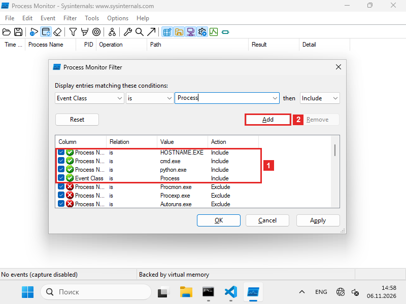
Что на кадреОкно фильтра Process Monitor поверх главного окна. Фильтр оставляет в записи только нужные события. Внизу окна — список условий, столбцы: Column (что проверять), Relation (как сравнивать), Value (значение), Action (что делать с подходящими событиями).
- 1Четыре условия с действием Include (включить):
Process Name is HOSTNAME.EXE,cmd.exe,python.exeиEvent Class is Process. Условия одного столбца объединяются через «или», разных столбцов — через «и». В записи останутся события процессов этих трёх программ. - 2Кнопка Add (добавить) переносит в список условие из верхней строки. Так появилось последнее из четырёх:
Event Class is Process.
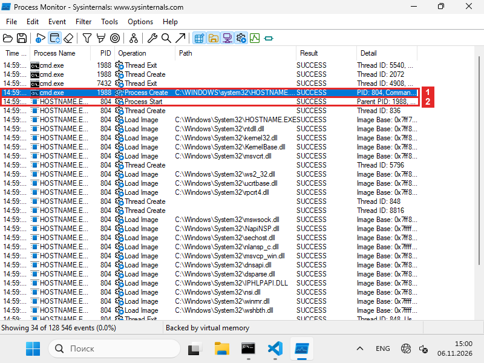
Что на кадреГлавное окно Process Monitor после записи. Одна строка — одно событие. Столбцы: Time (время), Process Name (имя процесса), PID (номер процесса), Operation (операция), Path (путь), Result (результат), Detail (подробности). В строке состояния внизу:
Showing 34 of 128 546 events— фильтр оставил 34 события из 128 546.- 1Строка
cmd.exe, номер 1988, операцияProcess Create(создание процесса). В Path —C:\WINDOWS\system32\HOSTNAME.EXE, в Detail —PID: 804. Родитель создал процесс с номером 804. - 2Первая строка нового процесса
HOSTNAME.EXE, номер 804, операцияProcess Start(начало процесса). В Detail —Parent PID: 1988: родитель — процесс 1988, то естьcmd.exe.
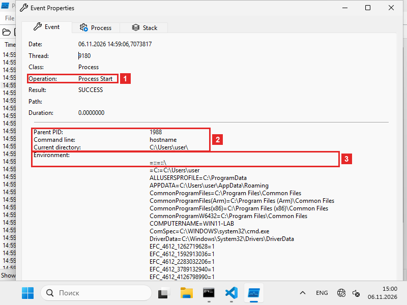
Что на кадреОкно Event Properties — свойства события. Оно открывается двойным щелчком по строке. На вкладке Event открыто событие
Process StartпроцессаHOSTNAME.EXE.- 1Поле Operation:
Process Start— первое событие нового процесса. - 2Что процесс получил от родителя:
Parent PID— номер родителя, 1988;Command line— командная строка, то есть команда запуска,hostname;Current directory— текущая папка процесса,C:\Users\user\. - 3Поле Environment: переменные окружения — пары «имя=значение», например
COMPUTERNAME=WIN11-LABиComSpec=C:\WINDOWS\system32\cmd.exe. Это копия переменныхcmd.exe.
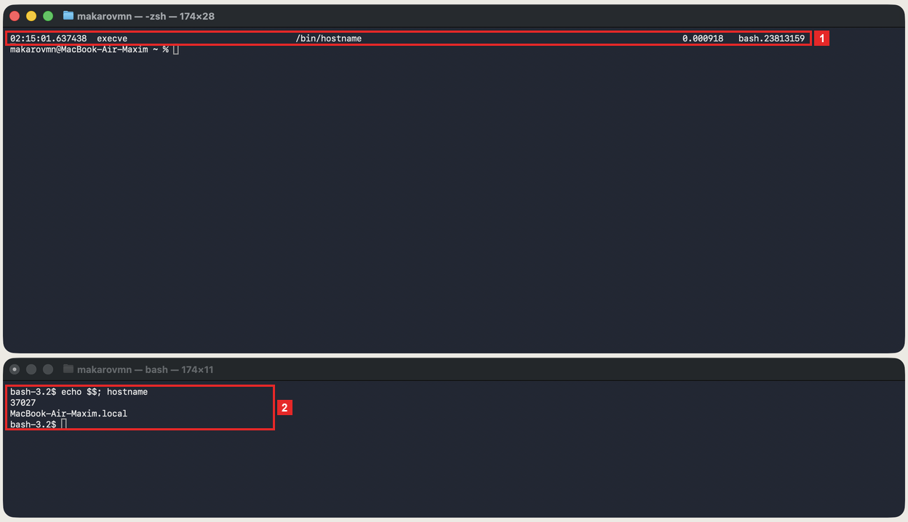
Что на кадреДва окна Терминала. Верхнее — запись
fs_usage -f exec, нижнее — команды. В верхнем одна строка — один запуск программы. Столбцы: время, вызов, путь программы, время вызова в секундах, процесс.- 1Строка с вызовом
execve(загрузка программы) и путём/bin/hostname. Время вызова — 0,000918 секунды. В последнем столбце —bash.23813159: вызов сделал процессbash, число после точки — номер потока внутри процесса. - 2Нижнее окно, команда
echo $$; hostname. Первая строка вывода — 37027, номер самой оболочки. Вторая —MacBook-Air-Maxim.local, имя компьютера, которое напечаталhostname.
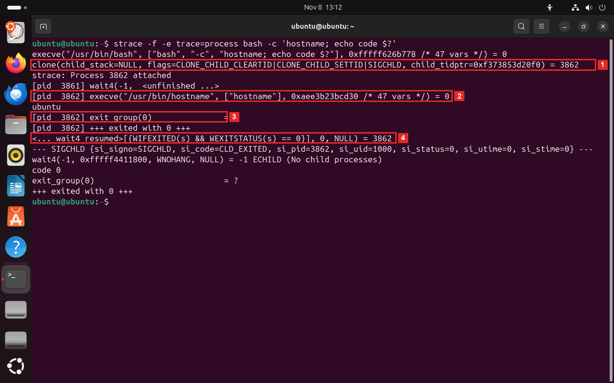
Что на кадреОкно терминала Ubuntu. Сверху команда
strace, ниже её вывод: одна строка — один системный вызов, то есть обращение программы к ядру. В квадратных скобках[pid …]— номер процесса, который сделал вызов. Число после знака равенства — результат вызова.- 1Вызов
clone(...) = 3862: оболочкаbash, номер 3861, создала свою копию. Результат вызова — номер копии, 3862. - 2В процессе 3862 вызов
execve("/usr/bin/hostname", ["hostname"], … /* 47 vars */) = 0: копия заменила программуbashнаhostname. В скобках — путь к программе, её аргументы и 47 переменных окружения. Результат 0 означает успех. Ниже рамки словоubuntu— имя компьютера, которое напечаталhostname. - 3Вызов
exit_group(0)в процессе 3862: процесс завершается с кодом 0. - 4Вызов
wait4у родителя вернул 3862, в скобкахWEXITSTATUS(s) == 0: оболочка дождалась ребёнка и получила его код 0. Ниже строкаcode 0— тот же код, который напечатала командаecho.
Что это значитКомандная строка не запускает программу сама: она просит ядро функцией
CreateProcessW. Ядро создаёт процесс, загружает в него программу и запускает первый поток. В записи родителя это одно событиеProcess Create, у ребёнка жизнь начинается сProcess Start.Что это значитexecveвызвала копия оболочки, поэтому у неё имяbash. Оболочка сначала создаёт копию себя вызовомfork, и копия вызываетexecve, чтобы загрузить в себяhostname. Вызовforkрежим-f execне показывает, видна только вторая половина рождения. Если в записи много строк других программ, перечислите их имена после ключа-e:sudo fs_usage -e -f exec "Code Helper (Plugin)".Что это значитРождение заняло два вызова:
cloneсоздал копию оболочки,execveзагрузил в копию другую программу. Номер 3862 появился приcloneи послеexecveостался тем же. Последняя строкаcode 0— тот же код, который оболочка получила вwait4.В отчёт. имя и номер родителя, номер нового процесса и событиевызов, которым он создан.
Снимок в отчёт · 01 Сохраните окно как
screenshots/01_birth.png. На снимке должно быть видно: запись запускаhostname: родитель создаёт процесс, у нового процесса номер родителя. - 1Четыре условия с действием Include (включить):
-
Посмотрите библиотеки нового процессаЗакройте окно свойств и прокрутите запись в конец (End).Посмотрите библиотеки нового процессаВ верхнем окне выполните
sudo fs_usage -f pathname | grep hostname.-f pathnameоставляет обращения к файлам по имени, аgrep hostname— только строки, где встречаетсяhostname: в последнем столбце стоит имя процесса. В нижнем окне выполнитеhostname, подождите несколько секунд и остановите запись.Посмотрите библиотеки нового процессаВыполнитеstrace -e trace=openat hostname.openat— вызов, которым процесс открывает файл;-fздесь не нужен, потому чтоhostnameдетей не запускает.Зачем этот шагПрограмма hostname крошечная, но без библиотек она не работает. Смотрим, кто подключает их, пока сама программа ещё не начала работу.
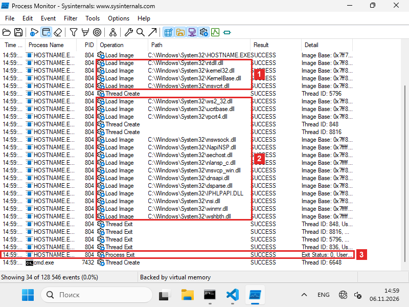
Что на кадреГлавное окно Process Monitor, запись прокручена в конец. Операция
Load Image— загрузка в процесс файла программы или библиотеки (файла.dll). Все строки на кадре — процессHOSTNAME.EXE, номер 804.- 1Первые четыре библиотеки:
ntdll.dll,kernel32.dll,KernelBase.dllиmsvcrt.dll. Выше рамки стоитLoad Imageсамой программыHOSTNAME.EXE. - 2Ещё 14 библиотек, среди них сетевые
ws2_32.dll,mswsock.dllиdnsapi.dll. Имя компьютераhostnameузнаёт через сетевые функции. - 3Строка
Process Exit(завершение процесса). В Detail —Exit Status: 0: код завершения 0, процесс закончил работу без ошибки.
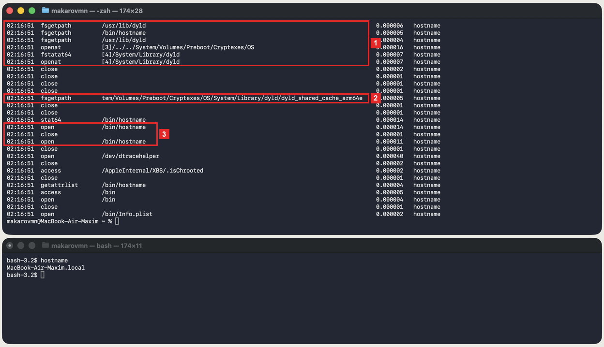
Что на кадреДва окна Терминала. Сверху — вывод
fs_usage -f pathname, отфильтрованный по словуhostname. Одна строка — одно обращение к файлу. Столбцы: время, вызов, путь, время вызова, имя процесса. Снизу — командаhostnameи её вывод,MacBook-Air-Maxim.local.- 1Первые обращения нового процесса:
/usr/lib/dyld— загрузчик macOS (dyld),/bin/hostname— сама программа и папка/System/Library/dyld, которую открыл загрузчик. - 2Файл
dyld_shared_cache_arm64e(вызовfsgetpath— получение пути): общий кэш системных библиотек. Начало пути обрезано границей окна. - 3Загрузчик открывает файл программы
/bin/hostname(вызовopen), закрывает его (close) и открывает снова.
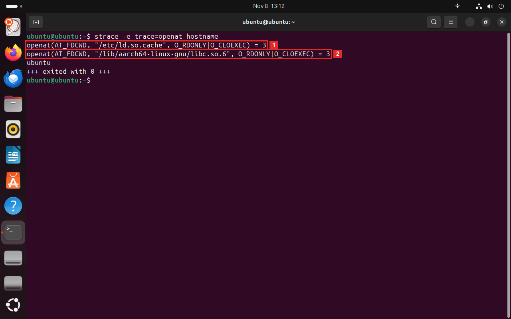
Что на кадреОкно терминала Ubuntu. Команда
strace -e trace=openat hostnameпоказывает только открытия файлов. В скобках вызова — путь к файлу, число после знака равенства (3) — номер, под которым файл открыт в процессе. Ниже — словоubuntu, имя компьютера, и строка+++ exited with 0 +++: процесс завершился с кодом 0.- 1Загрузчик открыл
/etc/ld.so.cache— список библиотек системы и путей к ним. По нему он ищет нужный файл. - 2Загрузчик открыл
/lib/aarch64-linux-gnu/libc.so.6— стандартную библиотеку C. Других библиотекhostnameне открывает.
Что это значитПервой строкой
Load Imageидёт сама программаHOSTNAME.EXE, второй —ntdll.dll: её ядро загружает в каждый процесс. Остальные библиотеки подключает загрузчик изntdll.dllпо списку, записанному в файле программы, — тот список, который в ЛР 3 печаталdumpbin /dependents. Всего 18 библиотек ради программы, которая печатает одну строку.Что это значитОтдельных файлов библиотек в записи нет. В macOS системные библиотеки собраны в один большой файл — общий кэш, и
dyldподключает его целиком; в каждом процессе он уже лежит в памяти. Поэтому в ЛР 3otool -Lпоказывал пути к библиотекам, которых нет на диске отдельными файлами: они внутри кэша.Что это значитОба файла открывает загрузчик
ld-linuxещё до функцииmainпрограммы. Саму программу и загрузчик ядро подключило приexecve, поэтому их открытия в этом выводе нет. Программеhostnameхватает одной библиотеки — это видно и командойldd /usr/bin/hostnameиз ЛР 3.В отчёт. сколько библиотек загрузил процесс и какая из них первая.
Снимок в отчёт · 02 Сохраните окно как
screenshots/02_libraries.png. На снимке должно быть видно: библиотеки, которые загрузилhostname, и первая из них. - 1Первые четыре библиотеки:
-
Получите код завершенияОчистите запись Ctrl+X и включите её Ctrl+E. В командной строке выполните
cmd /c exit 7: вторая командная строка сразу завершится с кодом 7. Затем выполнитеecho code %errorlevel%: переменнаяerrorlevelхранит код последней команды. Остановите запись и прокрутите её в конец.Получите код завершенияВ верхнем окне снова выполнитеsudo fs_usage -f exec. В нижнем выполнитеbash -c 'exit 7'; echo code $?: вторая оболочкаbashсразу завершится с кодом 7, а$?— код последней команды. Остановите запись.Получите код завершенияВыполнитеstrace -f -e trace=process bash -c 'sh -c "exit 7"; echo code $?'. Оболочкаbashзапустит вторую оболочкуsh, та сразу завершится с кодом 7, а$?— код последней команды.Зачем этот шагПроцесс закончил работу. Как родитель узнаёт, получилось ли у ребёнка? По числу — коду завершения. Смотрим на него со стороны ребёнка и со стороны родителя.
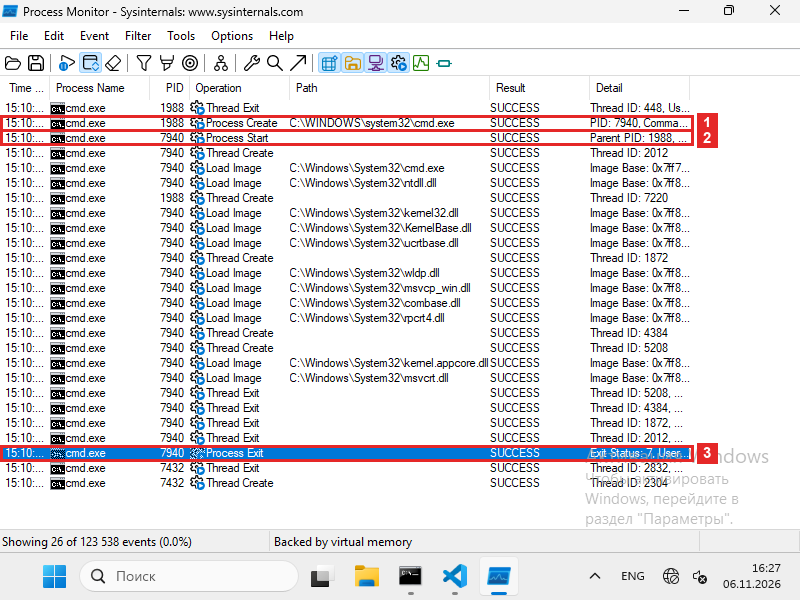
Что на кадреГлавное окно Process Monitor. На кадре события двух процессов
cmd.exe: родителя с номером 1988 и нового с номером 7940. Новый — вторая командная строка, которую запустила командаcmd /c exit 7. В окне командной строки, которого на кадре не видно,echoпечатаетcode 7.- 1Строка
cmd.exe1988, операцияProcess Create. В Path —C:\WINDOWS\system32\cmd.exe, в Detail —PID: 7940. Родитель создал второйcmd.exe. - 2Операция
Process Startпроцесса 7940, в Detail —Parent PID: 1988. - 3Последнее событие процесса 7940 —
Process Exit. В Detail —Exit Status: 7: процесс завершился с кодом 7.
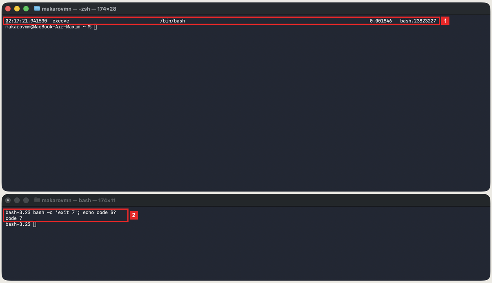
Что на кадреДва окна Терминала. Сверху — запись
fs_usage -f exec, снизу — команда со второй оболочкойbash, которая сразу завершается с кодом 7.- 1Строка с вызовом
execveи путём/bin/bash, процессbash.23823227: копия оболочки загружает в себя вторую оболочкуbash. Строки о завершении процесса в записи нет. - 2Нижнее окно: после команды напечатано
code 7. Это код второй оболочки, который родитель взял из$?.
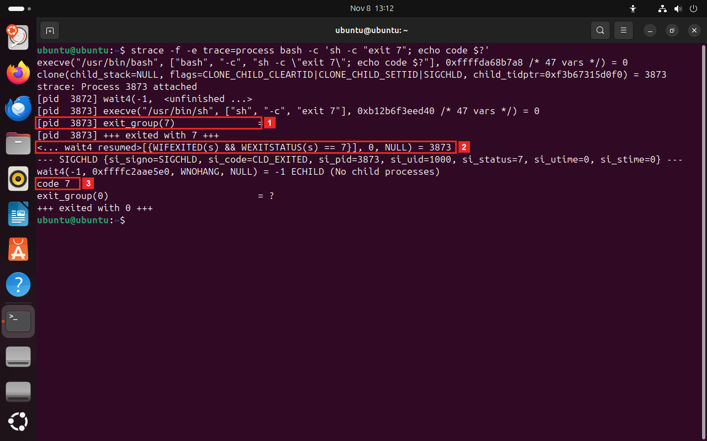
Что на кадреОкно терминала Ubuntu, вывод
strace -f. Процесс 3873 — вторая оболочкаsh, её создалbashс номером 3872.- 1В процессе 3873 вызов
exit_group(7):shзавершается с кодом 7. Строка ниже,+++ exited with 7 +++, подтверждает это. - 2Вызов
wait4у родителя вернул 3873, в скобкахWEXITSTATUS(s) == 7: родитель получил код 7. - 3Строка
code 7: командаechoнапечатала код, который оболочка взяла из$?.
Что это значитКод завершения — число, которое процесс оставляет, когда заканчивает работу. Ядро хранит его, пока родитель не прочитает. 0 означает успех, другие числа — ошибку, а смысл каждого числа задаёт сама программа.
Что это значитЗавершения процесса в записи
fs_usageнет. Код виден у родителя: оболочка дождалась ребёнка и положила его код в$?. Код завершения — число, которое процесс оставляет, когда заканчивает работу. Ядро хранит его, пока родитель не прочитает. 0 означает успех, другие числа — ошибку, а смысл каждого числа задаёт сама программа.Что это значитКод прошёл путь от ребёнка к родителю:
shоставил число 7 при завершении, ядро хранило его, покаbashне забрал его вызовомwait4. В шаге 1 код был 0, здесь — 7.В отчёт. код завершения, где он виден у ребёнка и где у родителя.
Снимок в отчёт · 03 Сохраните окно как
screenshots/03_exit_code.png. На снимке должно быть видно: завершение ребёнка с кодом 7 и тот же код у родителя. - 1Строка
-
Запустите программу, которой нетОткройте фильтр Ctrl+L, снимите галочку у условия Event Class и добавьте условие Path contains nosuch, затем OK. Очистите запись и включите её. В командной строке выполните
nosuch, затемecho code %errorlevel%. Остановите запись и прокрутите её в начало (Home).Запустите программу, которой нетВ верхнем окне выполнитеsudo fs_usage -f exec. В нижнем выполнитеenv nosuch; echo code $?: программаenvзапускает другую программу по имени и ищет её так же, как функции запуска процесса. Остановите запись.Запустите программу, которой нетВыполнитеstrace -f -e trace=execve env nosuch. Программаenvзапускает другую программу по имени и ищет её так же, как функции запуска процесса.-e trace=execveоставляет только вызовы загрузки программы.Зачем этот шагЧто будет, если программы нет? Увидим, как система ищет её по папкам и откуда берётся ошибка «не найдено».
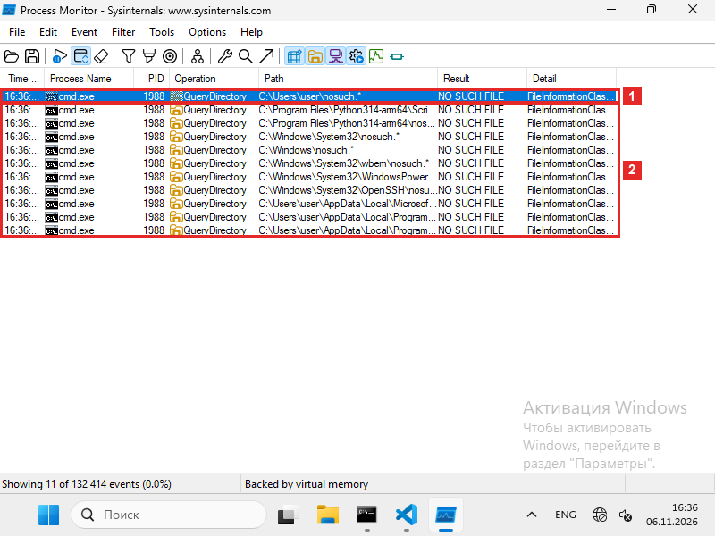
Что на кадреГлавное окно Process Monitor, запись прокручена в начало. Все строки — процесс
cmd.exe1988, операцияQueryDirectory(чтение списка файлов в папке). В Path записаны папка и маскаnosuch.*, в Result — ответ. В строке состояния:Showing 11 of 132 414 events. В окне командной строки, которого на кадре не видно, — сообщение «"nosuch" не является внутренней или внешней командой» иcode 9009.- 1Первый запрос:
C:\Users\user\nosuch.*, результатNO SUCH FILE(файла нет). Такcmd.exeсначала ищет программу в текущей папке. - 2Ещё десять таких же запросов, по одному на папку из переменной
PATH: папки Python,System32,Windowsи другие. Все с ответомNO SUCH FILE. Вместе с первым — 11 запросов.
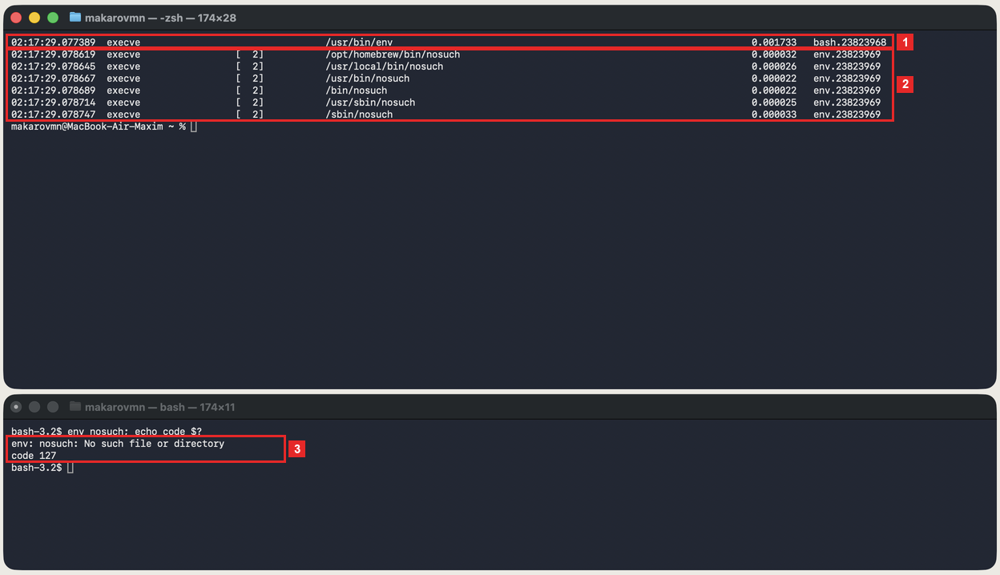
Что на кадреДва окна Терминала. Сверху — запись
fs_usage -f exec. В столбце после вызова в квадратных скобках стоит код ошибки:[ 2]— ошибка 2, «нет такого файла». Снизу — командаenv nosuch; echo code $?.- 1Копия
bashзагружает программу/usr/bin/env. - 2Шесть вызовов
execveпроцессаenvс путями/opt/homebrew/bin/nosuch,/usr/local/bin/nosuch,/usr/bin/nosuchи так далее. У каждого[ 2]: в этой папке программы нет. - 3Нижнее окно: сообщение
env: nosuch: No such file or directoryиcode 127— код завершенияenv.
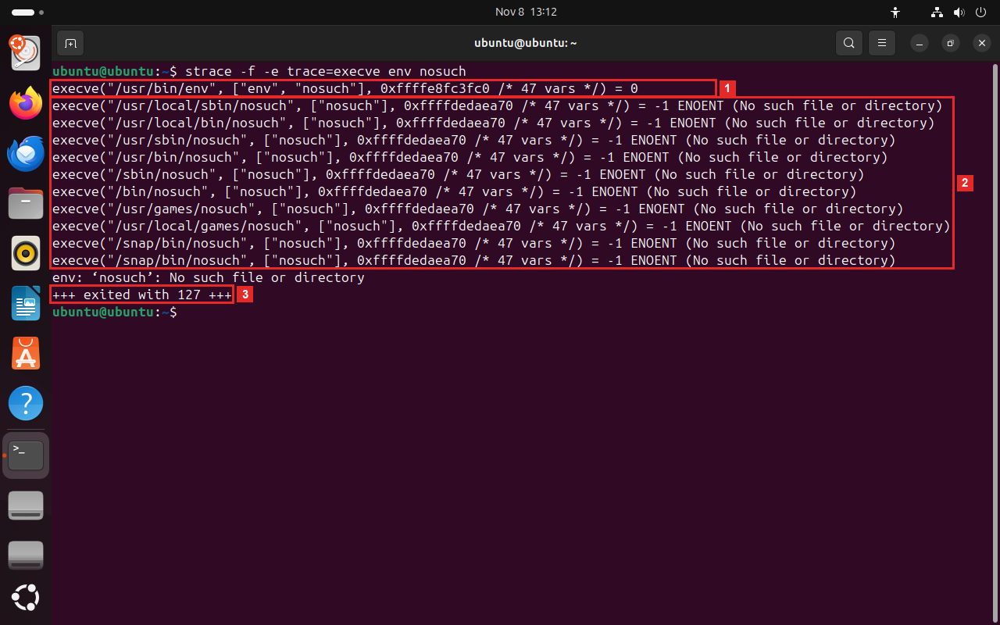
Что на кадреОкно терминала Ubuntu. Команда
strace -f -e trace=execve env nosuchпоказывает только вызовыexecve— загрузку программы.ENOENT— ошибка «нет такого файла».- 1Вызов
execveзагружает программуenvс аргументомnosuch. Результат 0 означает успех. - 2Десять вызовов
execveс путями/usr/local/sbin/nosuch,/usr/local/bin/nosuchи так далее: по одному на каждую запись изPATH. Каждый вернул-1 ENOENT (No such file or directory): в этой папке программы нет. - 3Строка
+++ exited with 127 +++:envзавершился с кодом 127. Выше рамки — его сообщение об ошибке.
Что это значитСтроки
Process Createнет:cmd.exeсама искала файл поPATH, не нашла и процесс не создавала. 9009 — код, которымcmd.exeсообщает «команда не найдена». Если вызватьCreateProcessWс именем программы, которой нет, функция вернёт ошибку 2,ERROR_FILE_NOT_FOUND.Что это значитЯдро ищет программу только по полному пути. Перебирает папки
PATHсама библиотека C — функцияexecvp, которую вызываетenv. Ошибка 2,ENOENT, — «нет такого файла». 127 — код, которым оболочки иenvсообщают «программа не найдена». Папок у вас может быть больше: их список — в переменнойPATH, посмотреть его можно командойecho $PATH.Что это значитЯдро ищет программу только по полному пути. Перебирает папки
PATHсама библиотека C — функцияexecvp, которую вызываетenv.ENOENT— ошибка номер 2, «нет такого файла». 127 — код, которым оболочки иenvсообщают «программа не найдена».В отчёт. сколько папок проверено, код ошибки поиска и код завершения.
Снимок в отчёт · 04 Сохраните окно как
screenshots/04_no_program.png. На снимке должно быть видно: поискnosuchпо папкам из PATH и ошибка «не найдено». - 1Первый запрос:
-
Запустите программу из PythonОткройте фильтр, снимите галочки у обоих условий Path и верните галочку Event Class. Очистите запись и включите её. В командной строке выполните
python -c "import subprocess; r = subprocess.run(['hostname'], capture_output=True); print('code', r.returncode)"
Python запуститhostnameкак дочернюю программу, дождётся её, заберёт её вывод и напечатает код завершения.
Ключи:subprocess.run— запуск с ожиданием,capture_output=True— забрать вывод,r.returncode— код. Остановите запись и найдите строкуpython.exeс операциейProcess Create.Запустите программу из PythonВ верхнем окне выполнитеsudo fs_usage -f exec. В нижнем выполнитеpython3 -c "import subprocess; r = subprocess.run(['hostname'], capture_output=True); print('code', r.returncode)"
Python запуститhostnameкак дочернюю программу, дождётся её, заберёт её вывод и напечатает код завершения.
Ключи:subprocess.run— запуск с ожиданием,capture_output=True— забрать вывод,r.returncode— код. Остановите запись.Запустите программу из PythonВыполнитеstrace -f -e trace=process python3 -c "import subprocess; r = subprocess.run(['hostname'], capture_output=True); print('code', r.returncode)"
Python запуститhostnameкак дочернюю программу, дождётся её, заберёт её вывод и напечатает код завершения.
Ключи:subprocess.run— запуск с ожиданием,capture_output=True— забрать вывод,r.returncode— код.Зачем этот шагОстаётся проверить, что другие программы запускают процессы так же. Берём Python и сравниваем с оболочкой из шага 1.
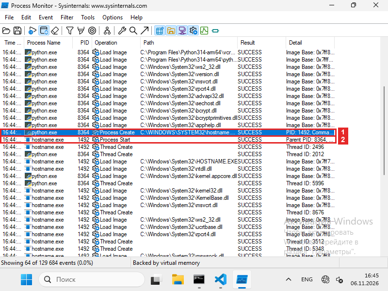
Что на кадреГлавное окно Process Monitor. Процесс
python.exeс номером 8364 сначала загружает свои библиотеки (строки выше рамок), потом создаёт ребёнка —hostname.exe. В окне командной строки, которого на кадре не видно, Python печатаетcode 0.- 1Строка
python.exe8364, операцияProcess Create. В Path —C:\WINDOWS\SYSTEM32\hostname.exe, в Detail —PID: 1492. Python создал процесс 1492. - 2Операция
Process Startпроцессаhostname.exe1492, в Detail —Parent PID: 8364: родитель — Python.
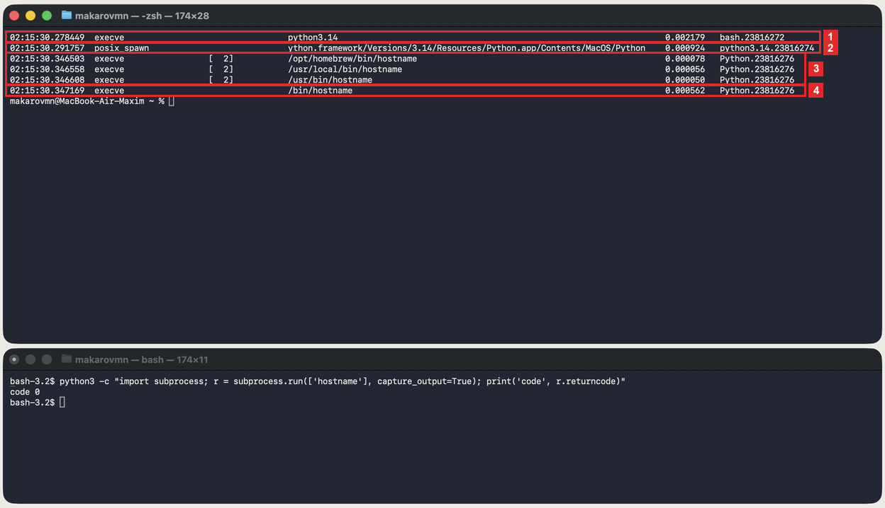
Что на кадреДва окна Терминала. Сверху — запись
fs_usage -f exec, снизу — команда Python сsubprocess.run. Внизу напечатаноcode 0: Python получил код завершения 0.- 1Копия
bashзагружаетpython3.14. Это короткий запускатель из Homebrew. - 2Вызов
posix_spawn— создание процесса и загрузка программы одним вызовом. Запускатель так запускает настоящий интерпретаторPython.app/Contents/MacOS/Python. Начало пути обрезано границей окна. - 3Три вызова
execveпроцессаPython, у каждого[ 2](нет такого файла): ребёнок Python ищетhostnameв папкахPATH. - 4Четвёртая попытка,
/bin/hostname, прошла без ошибки: программа найдена и загружена.
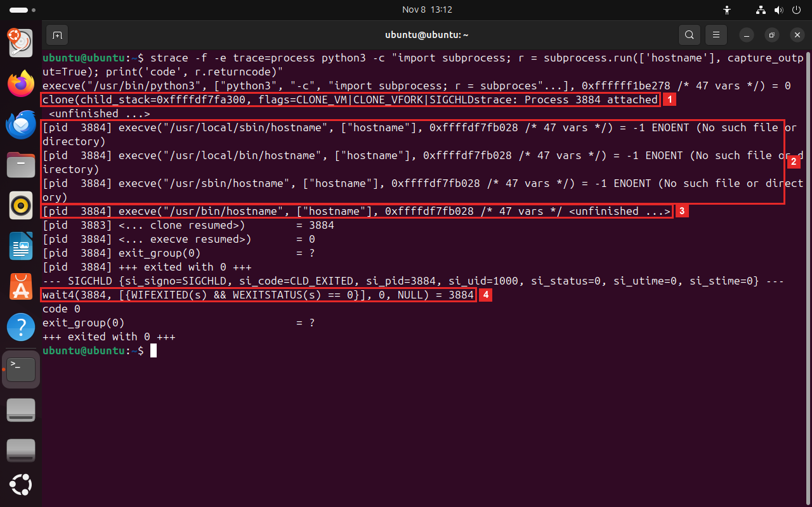
Что на кадреОкно терминала Ubuntu, вывод
strace -f -e trace=processдля команды Python сsubprocess.run. Родитель —python3, номер 3883, ребёнок — 3884. Пометка<unfinished ...>значит, что вызов ещё не закончился: его результатstraceнапечатает ниже, в строкеresumed.- 1Вызов
cloneс флагамиCLONE_VM|CLONE_VFORK: Python создаёт ребёнка. В той же строкеProcess 3884 attached—straceначал следить за новым процессом 3884. - 2Три вызова
execveв процессе 3884 с ответомENOENT:/usr/local/sbin/hostname,/usr/local/bin/hostname,/usr/sbin/hostname. Ребёнок сам ищетhostnameв папкахPATH. - 3Четвёртая попытка,
/usr/bin/hostname, удалась. Вызов помеченunfinished: его результат 0 стоит ниже, в строке<... execve resumed>. - 4Вызов
wait4(3884, …)у Python: он дождался процесса 3884 и получил код 0 (WEXITSTATUS(s) == 0). Нижеcode 0напечатал сам Python.
Что это значитРодителем стал Python, а сам запуск устроен так же, как у командной строки в шаге 1:
subprocess.runвызывает ту же функциюCreateProcessW.Что это значитPython запускает программу так же, как оболочка: копия процесса, затем
execveс перебором папокPATH. Строка {mk(2)} показывает второй способ запуска —posix_spawn, который делает копию и загрузку программы одним вызовом.Что это значитPython запускает программу теми же двумя шагами, что оболочка в шаге 1. Разница в флагах
clone:CLONE_VMзначит, что ребёнок доexecveпользуется той же памятью, что родитель: копия памяти не создаётся.CLONE_VFORKзначит, что родитель стоит, пока ребёнок не вызоветexecve. Без копии памяти запуск быстрее.В отчёт. номер процесса Python, номер ребёнка и событиевызов, которым ребёнок создан.
Снимок в отчёт · 05 Сохраните окно как
screenshots/05_python_child.png. На снимке должно быть видно: Python создаёт процессhostname: номер Python и номер ребёнка. - 1Строка
§4Что получилось
| Windows | macOS | Linux | |
|---|---|---|---|
| Создать процесс | CreateProcessW: событие Process Create у родителя | fork, затем execve; или posix_spawn | clone, затем execve |
| Первое событие ребёнка | Process Start с Parent PID | execve загружает программу в копию родителя | |
| Библиотеки | Load Image: сначала ntdll.dll | загрузчик dyld: общий кэш dyld_shared_cache | загрузчик ld-linux: ld.so.cache, libc.so.6 |
| Код завершения | Process Exit, Exit Status; в командной строке %errorlevel% | в оболочке $?; fs_usage завершение не показывает | exit_group у ребёнка, wait4 у родителя; в оболочке $? |
| Программы нет | поиск по PATH, код cmd.exe 9009; у CreateProcessW ошибка 2 | execve по папкам PATH с ошибкой ENOENT (2), код 127 | |
- Во всех пяти шагах путь один: родитель просит ядро, ядро загружает программу, загрузчик — библиотеки.
- Программа завершается с кодом, родитель его забирает.
- Python в шаге 5 прошёл тот же путь, что и командная оболочка.
- В главе 2.2 этот путь пройдёт ядро агента: функция на C запустит программу, дождётся её и вернёт мозгу код завершения.
§5Отчёт
Бланк — в labs/05-process-birth/report.md. Замените каждый пропуск ___ данными со своего экрана, снимки положите в screenshots/. Коммит — labs 05: рождение процесса, отчёт.
# ЛР 5. Рождение процесса Система: ___ Программа записи: ___ ## Рождение Родитель (имя и номер): ___ Номер нового процесса: ___ Событие или вызов, которым создан процесс: ___ Библиотек загружено и первая из них: ___ ## Завершение Код завершения у ребёнка и у родителя: ___ Программа nosuch: папок проверено ___, ошибка ___, код ___ ## Запуск из Python Номер Python и номер ребёнка: ___ Чем запуск из Python отличается от запуска из оболочки: ___ Не получилось: ___ ## Снимки экрана     
Кроме чисел в отчёт кладутся 5 снимков экрана. В папке labs/05-process-birth/screenshots уже лежат заглушки с нужными именами, а в report.md — ссылки на них с подписями. Сделайте снимок окна после шага из таблицы и сохраните его поверх заглушки с тем же именем: подпись и ссылку менять не нужно, на GitHub отчёт сразу покажет ваш снимок. В каждом шаге такой снимок отмечен оранжевой строкой «Снимок в отчёт».
Как снять окно: Win+Shift+S → «Окно», затем сохранить из «Ножниц» как PNG⌘+⇧+4, затем Пробел и щелчок по окну — PNG появится на Рабочем столеPrtSc → «Окно», PNG сохраняется в папку «Изображения/Снимки экрана». Снимок — всё окно программы, без обрезки; имя файла — строго из таблицы.
| № | После шага | Файл | Что должно быть видно |
|---|---|---|---|
| 01 | 1 | 01_birth.png | запись запуска hostname: родитель создаёт процесс, у нового процесса номер родителя |
| 02 | 2 | 02_libraries.png | библиотеки, которые загрузил hostname, и первая из них |
| 03 | 3 | 03_exit_code.png | завершение ребёнка с кодом 7 и тот же код у родителя |
| 04 | 4 | 04_no_program.png | поиск nosuch по папкам из PATH и ошибка «не найдено» |
| 05 | 5 | 05_python_child.png | Python создаёт процесс hostname: номер Python и номер ребёнка |
§6Проверьте себя
Пять вопросов с ответами
Кто создаёт процесс: родитель или ядро?
Ядро. Родитель только просит его системным вызовом: CreateProcessWfork или clone, затем execve. Ядро выделяет номер и память и загружает программу.
Почему в Linux номер процесса не меняется после execve?
execve заменяет программу в уже созданном процессе. Номер появился раньше, при clone, и остаётся у процесса до его завершения.
Какая библиотека загружается в процесс первой и почему?
В Windows — ntdll.dll: в ней загрузчик, который подключает остальные библиотеки. В Linux первым работает загрузчик ld-linux, он открывает ld.so.cache и затем библиотеки программы, в macOS — загрузчик dyld.
Откуда родитель узнаёт код завершения ребёнка?
Ребёнок оставляет код ядру при завершении. Родитель ждёт ребёнка и забирает код: в Windows — WaitForSingleObject и GetExitCodeProcess, в macOS и Linux — wait4 или waitpid.
Почему при запуске несуществующей программы в записи несколько попыток?
Имя без пути ищется по очереди во всех папках переменной PATH. Ошибка «нет такого файла» приходит из каждой папки, и только после последней запуск признаётся неудачным.